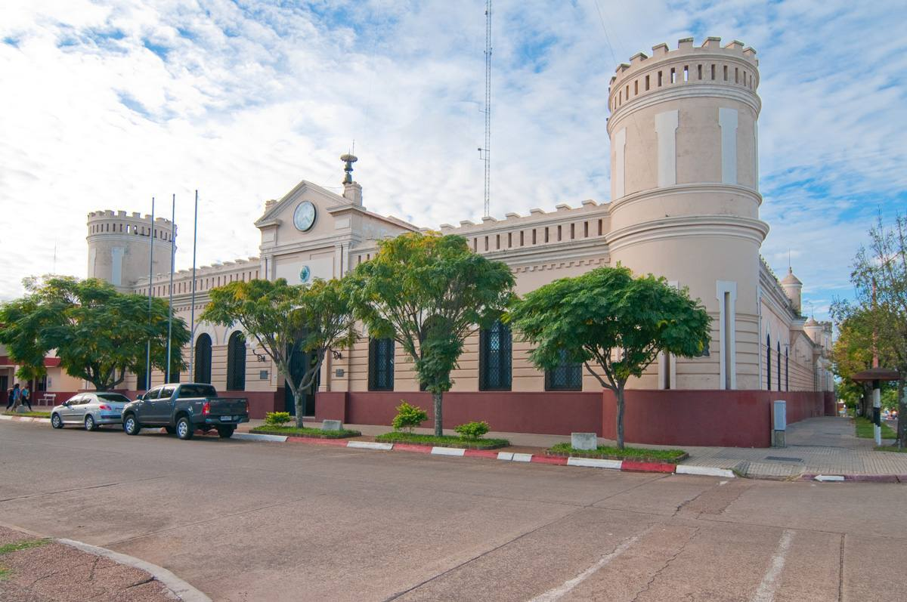
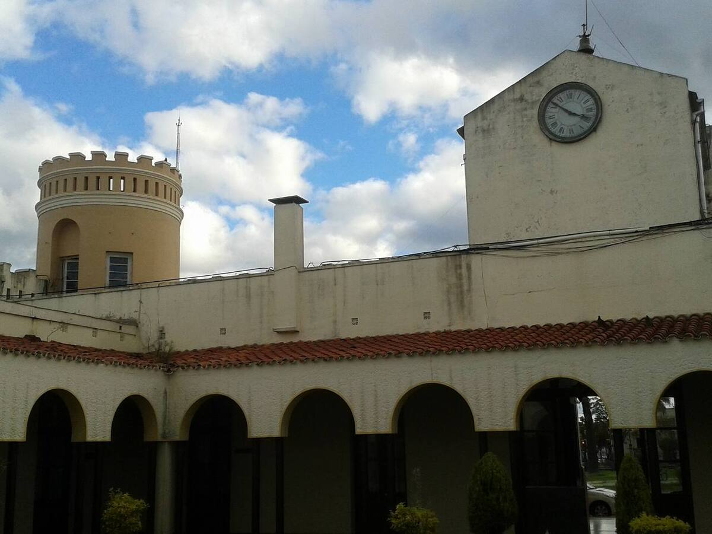
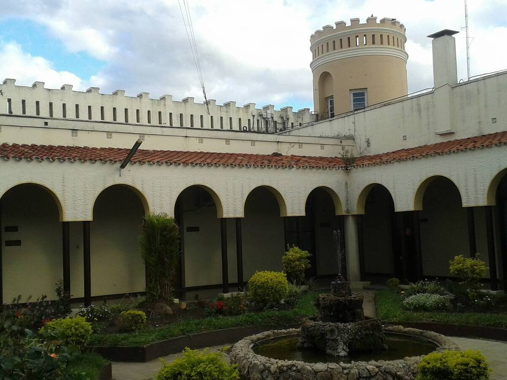
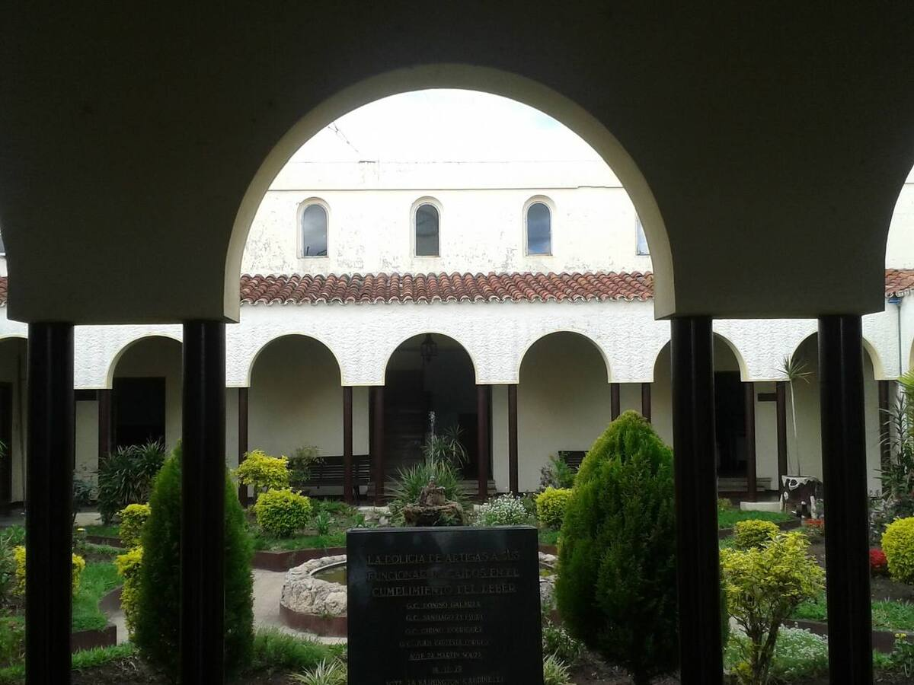
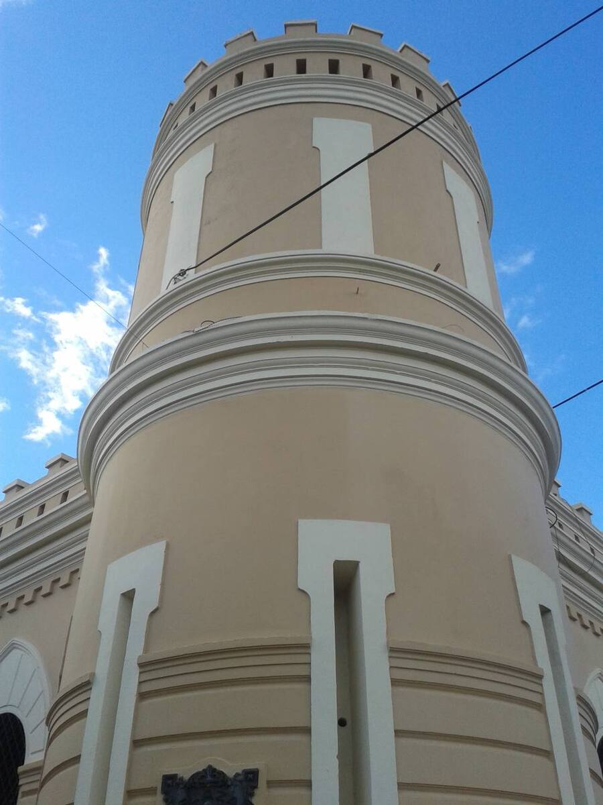
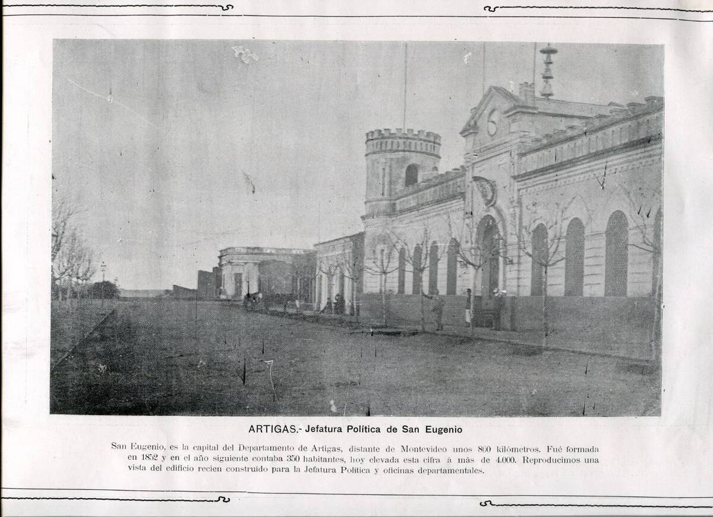

Un castillo en el centro
Se inauguró el 21 de marzo de 1896, después de cuatro años de obra, cuando era jefe político el coronel Carlos Lecueder, el primero que tuvo el departamento. Está en la esquina de la avenida que hoy lleva su nombre y la calle Amaro Ferreira Ramos.
Se inspira en la arquitectura militar europea y recrea un castillo medieval, con cuatro torres almenadas y saeteras. El patio tenía un pórtico con columnas de hierro, que después se reemplazó por arcos de medio punto.
El reloj de la torre
- Llegó desde París en diez cajones.
- El relojero Studler lo armó y lo instaló en el frente el 22 de junio de 1901. Se inauguró el 8 de julio de ese año.
- Sus tres campanas pesan 300 kilos en total y se pensaron para que se oyeran a 5 kilómetros de distancia.
Más de un siglo de historia
La Jefatura nació con el departamento, en octubre de 1884, cuando San Eugenio pasó a ser su capital. Primero funcionó en una casona colonial, en la esquina de las calles que hoy son la avenida Carlos Lecueder y Eduardo M. Castro.
En junio de 2002, el edificio y su reloj fueron declarados Patrimonio Histórico.
Fotos

Foto: Nicolas Barriola · CC BY-SA 3.0


Foto: Alejandro Gil Álvarez · CC BY-SA 3.0


Foto: Alejandro Gil Álvarez · CC BY-SA 3.0


Foto: Alejandro Gil Álvarez · CC BY-SA 3.0


Foto: Alejandro Gil Álvarez · CC BY-SA 3.0


Foto: Dornaleche y Reyes Impresores · Dominio público